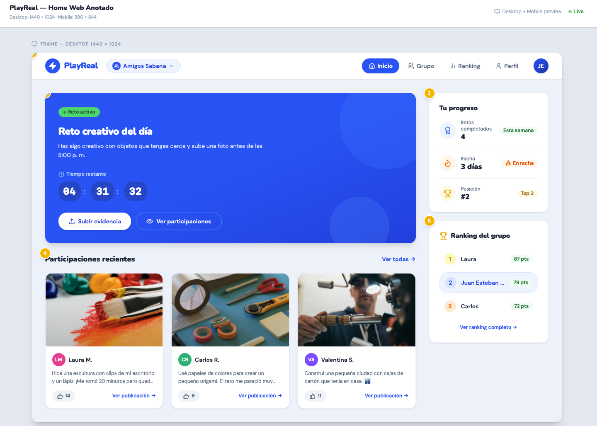

Organized Challenge Flow
A web app can organize the full flow from private group to active challenge, submitted evidence, voting, score calculation, and ranking. A chat does not separate each challenge from normal conversation.
A web application for student groups that organize challenges with evidence, voting, points, streaks, and ranking.
PlayReal helps private student groups create challenges, collect photo evidence, vote for the best submissions, calculate scores, and display a friendly ranking. The platform keeps the project focused on one main flow: group, challenge, evidence, voting, score, and ranking.
Student groups often organize challenges through WhatsApp, Instagram, or other messaging tools. The evidence gets mixed with normal conversations, votes are counted manually, and students do not have a clear way to see who participated, who received votes, or who is leading the ranking.
A web app can organize the full flow from private group to active challenge, submitted evidence, voting, score calculation, and ranking. A chat does not separate each challenge from normal conversation.
A web app can count votes, calculate points, prevent repeated votes, and update rankings. A spreadsheet or chat would require manual work and could create mistakes.
A web app can keep photo evidence, comments, dates, and vote counts organized by challenge, which is difficult to maintain in an existing messaging tool.
A web app can work from a computer or phone browser without installing a native mobile app, making it accessible for university students.
The target users are university students who participate in small private friend groups and want to stay motivated through visual challenges, evidence, votes, points, streaks, and ranking.
As a student group member, I want to create a private challenge group so that I can invite my friends and participate with them.
As a participant, I want to see the active challenge so that I know what activity I need to complete and before when.
As a participant, I want to upload a photo with a comment so that I can prove that I completed the challenge.
As a participant, I want to vote for another member's submission so that the group can choose the best evidence fairly.
As a participant, I want to see the group ranking so that I can know my position, points, completed challenges, and current streak.
This sample form represents how a student could request access to an early PlayReal group.
The Figma sketch shows the PlayReal Home screen with annotations for navigation, active challenge, progress, evidence feed, ranking, and responsive behavior.

Project lead. He coordinates the project, coordinates the team, and keeps the project aligned with the course rubric.
UX/UI and Frontend Designer. He is responsible for the creative and visual side of the project, focusing on user experience and frontend development.
Backend deployment and database lead. He designs the server-side logic and manages the data storage for the PlayReal platform.
Feedback and testing lead. He gathers user feedback and tests the PlayReal platform for usability and performance.
AI helped draft the semantic HTML structure, the project overview, the problem section, the web app justification articles, the user stories, and the form fields.
The HTML was adjusted to remove all CSS and JavaScript, keep exactly one h1, preserve a logical h2 and h3 heading hierarchy, add meaningful semantic elements, connect every form label to its matching input id, and shorten the image alternative text after WAVE reported a long alternative text alert.
WAVE reported one alert for long alternative text. The image alt text was shortened. The form was also improved with a fieldset, a legend, and autocomplete attributes for relevant inputs.
These changes were made because HW02 evaluates semantic HTML structure, accessibility attributes, form labeling, clean heading hierarchy, and absence of styling or scripts.